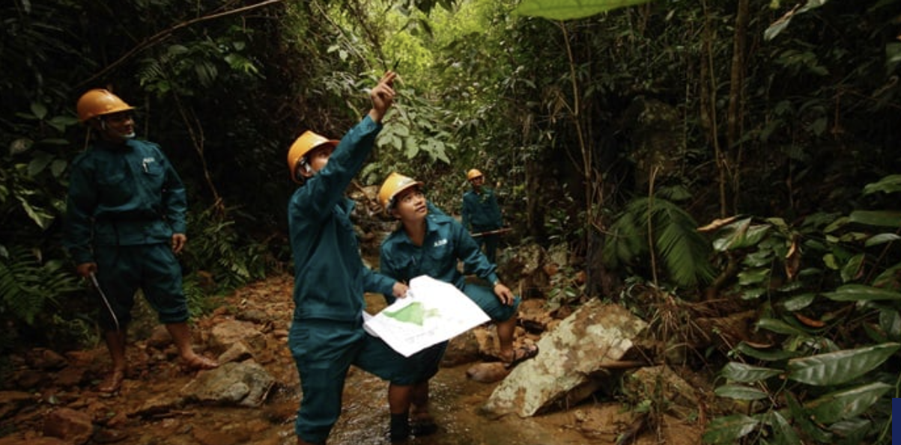

Preservación de la Biodiversidad

ONG Preservación del amazonas
¿Qué es la biodiversidad?
- La variedad genética dentro de las especies (diferencias entre
individuos).
- La variedad entre especies (animales, plantas, hongos, microbios).
- La variedad de ecosistemas (bosques, humedales, arrecifes, desiertos,
etc.).
Tener muchos tipos de especies y ecosistemas sanos es esencial: para
la seguridad alimentaria, para materiales medicinales, para regular el
clima, purificar el agua, y para nuestro bienestar general.
Datos y cifras
Más del 75 % de los cultivos alimentarios del mundo dependen de los
polinizadores, que aportan anualmente entre 235 000 y 577 000 millones
de dólares de los Estados Unidos a la producción agrícola mundial.
Más del 50 % de los medicamentos modernos proceden de fuentes
naturales. Por ejemplo, algunos antibióticos se obtienen de hongos y
hay analgésicos que se elaboran a partir de sustancias vegetales.
Los bosques albergan el 80 % de la biodiversidad terrestre, absorben
aproximadamente 2600 millones de toneladas de dióxido de carbono al
año y contribuyen a paliar el cambio climático.
Las especies exóticas invasoras provocan el 60 % de las extinciones de
especies y causan daños económicos en todo el mundo por un valor anual
de 423 000 millones de dólares de los Estados Unidos.
Los ecosistemas sanos proporcionan el 75 % del agua dulce, y los
humedales son fundamentales para purificar el agua. Sin embargo, desde
1970 han desaparecido el 35 % de los humedales.
Los Pueblos Indígenas, que constituyen aproximadamente el 6 % de la
población mundial, son partes interesadas importantes y sujetos de
derechos en la conservación y gestión sostenible de la biodiversidad.
Estos pueblos ocupan más de 38 millones de kilómetros cuadrados de
suelo en todo el mundo, donde se encuentra casi el 40 % de todas las
áreas protegidas.
¿Qué amenaza muestra en nuestra sociedad?

La degradación de los ecosistemas y la pérdida de biodiversidad se
están convirtiendo en problemas de salud importantes. Cuando se
alteran los ecosistemas, pueden verse afectados recursos como la
calidad del aire, el agua y los alimentos. Además, perdemos recursos
naturales valiosos, como especies animales y vegetales, que podrían
aportar beneficios para la salud y la medicina que todavía
desconocemos.
Soluciones y medidas para proteger la biodiversidad
Áreas protegidas: proteger hábitats clave, reservas
naturales, parques nacionales, zonas marinas.
OMEC: conservación fuera de zonas estrictamente
protegidas, como áreas gestionadas por comunidades locales o acuerdos
privados.
Restauración ecológica: reforestación, recuperación
de humedales, reconexión de hábitats fragmentados.
Agricultura y pesca sostenibles: métodos menos
intensivos, agroecología, reducción de pesticidas, rotación de
cultivos, pesca responsable.
Control de especies invasoras: prevención de
introducción, control o erradicación.
Reducción de la contaminación: tratamiento de aguas,
control de residuos, reducción de plásticos y emisiones.
Políticas y leyes: normativas nacionales e
internacionales, incentivos económicos, cumplimiento legal y
participación ciudadana.
Sensibilización y educación: informar a la sociedad,
fomentar hábitos sostenibles y valorar la naturaleza.